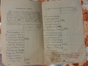

{kind=link}
{kind=link}
{kind=link}
{kind=link}
{kind=link}
{kind=link}
{kind=link}

Страницы авторов "Тёмного леса"
Литературный Кисловодск и окрестности
Пишите нам! temnyjles@narod.ru
Егор (Георгий) Лукич Гар (1870-1948), брат моего деда Аркадия Лукьяновича Гара, был самым младшим из пяти сыновей прадеда – Луки (Лукьяна) Михайловича Гара. Будучи военным хирургом, Егор Лукич участвовал в русско-японской войне 1904-1905 гг. и в Первой мировой войне, начавшейся летом 1914 г. С самого начала этой войны он вел дневник. К сожалению, записи прерываются в мае 1916 г. В 1918 г Е.Л.Гар был откомандирован в санаторий «Захарьино», с 1922 г. работал в туберкулезном санатории г. Геленджика, а с 1923 г. и до ухода на пенсию трудился хирургом в Истомкинской больнице в г. Богородске (ныне г. Ногинск Моск.обл.), в течение ряда лет был заведующим этой больницей. В 1946 г. за многолетний добросовестный труд был награжден правительством орденом «Знак почета». В 1948 г. Е.Л.Гару было присвоено звание заслуженного врача республики (посмертно).
Осенью 2017 г. внучка Егора Лукича О.Э.Гар передала нам с сыном Михаилом маленькую (8*13.5*1 см) рукописную книжечку, исписанную мелким твердым почерком. Старинная орфография с буквами «ять», i, твердым знаком, трудность расшифровки карандашных записей (лишь несколько страниц написано черными чернилами) помешали, вероятно, родным Егора Лукича прочесть его дневник, и вот через 101 год мы можем наконец стать как бы свидетелями того, что пережили врачи и команда полевого госпиталя, кочующего по дорогам войны в 1914-1916 гг. Я не претендую на строго научную расшифровку текста, написанного, по всей видимости, второпях, длинными фразами без знаков препинания, которые я расставила по своему разумению. Не ручаюсь и за правильное написание ряда названий населенных пунктов, которых уже нет на современных картах Польши, Украины и Белоруссии. Я также не исправляла стилистические погрешности, особенно заметные в начале повествования. Неразборчивые слова заменены многоточиями.
Т.К. Гар, 19 марта 2018 г.
| Дневник Е.Л. Гара | |
| Страница невника Е.Л. Гара | |
| Страница невника Е.Л. Гара | |
| Страница военного билета Е.Л. Гара | |
| Страница военного билета Е.Л. Гара | |
|  | Страница военного билета Е.Л. Гара |
| Страница военного билета Е.Л. Гара | |
| | Е.Л.Гар 1914-1916г. |
| Полевой госпиталь 1914-1916г. Е.Л.Гар крайний слева |
Уже приехал из-за границы 1 июля и дорогой узнав об убийстве наследника Австрийской империи и связывая намерения Австрии как воздействие на Сербию. За это убийство чувствовалось некоторое беспокойство за мир, но когда 10-12 июля был предъявлен Австрией ультиматум Сербии с его неслыханными требованиями, то сделалось ясным, что будет война непременно. Затем чрез два дня была объявлена Австрией война Сербии и затем было объявлено официальное сообщение России, что она не даст в обиду Сербию, что уже окончательно исключало всякую возможность на мир, и хотя еще 1 неделю велись мирные переговоры России, Германии, Австрии, Франции и Англии, но уже почти никто не сомневался в войне. 17-го была объявлена мобилизация, и я получил назначение в 404 воен. пол. госпиталь и хотя перспектива участия опять в войне и не привлекала меня, т.к. всего оставалось мне до отставки 5 лет, но наглость и притязание к высокомерию немцев, еще узнавши это хорошо будучи в Берлине, по правде сказать, облегчало это чувство и смягчало неприязнь опять переносить невзгоды военного положения.
VII/22. Побывавши в месте приемной комиссии по формированию госпиталя, опять получил почти неприятное впечатление о нашей бестолковщине, канцелярщине, ни порядку ни толку нет в нашей военной медицине. Насколько хорошо прошла мобилизация у военного начальника в Покрове, быстро, толково, настолько тут у нас бестолковщина. Никто ничего не знает, и не знаешь, к кому обратиться. Еще что в этой мобилизации поразило, это запрещение открытия винных лавок, это решительный удар пьянству, правда в первые дни мобилизации можно было наблюдать пьянство. Это еще опустошавшие последние остатки запасов водки, но и этих количество через несколько (дней) совершенно исчезло. Благодаря отсутствию пьяных исчезло хулиганство, уменьшилась та масса эксцессов со стороны призванных запасных, что наблюдалась в японскую войну, значительно поубавилась неимоверная русская ругань. Среди интеллигентного общества война несомненно пользуется сочувствием. Притязания немцев всем надоели.
VIII/1. Мы начали формировать госпиталь. Понемногу начали приобретать все необходимые вещи для этого, идет это не особенно быстро и толково. Полагается 20 дней для формирования госпиталя в эту мобилизацию, но вряд ли он будет готов и в августе, не достает еще многих людей, многого еще не куплено. Куда нас пошлют, к австрийской границе или германской, неизвестно.
VIII/8. Идем в Брест-Литовск, вряд ли там останемся, очень может быть, что оттуда пойдем к германской границе. Заболел старший наш ординатор (страдает 15-мм круглой язвой желудка), его освободили на 5 м-цев, конечно он не поправится за это время, и мне придется исправлять его должность, т.к. я среди других врачей являюсь старшим и по выпуску и как хирург.
Я начинаю сомневаться, устройство ли дало так, как завед. формированием говорит - исключить заболевших, а бумаги не дает, нечего сказать, хорошая вещь. Будет ли мне хирургическая работа - вопрос, как-то все у нас безалаберно идет в медицинском отделе, не считаются ни со специальностью врача ни с возрастом, и назначают всех куда придется. Говорят даже по буквам, например фамилии на букву А идут в полку, если не хватает, то следующую букву и так далее. Эта вещь вполне вероятная для медицинского начальства! Назначено выступать 14 августа.
VIII/12. Вести из театров войны в общем хорошие, немцев в Восточной Пруссии поколотили, французы с бельгийцами хорошо держатся, с австрийской границей пока ничего. Сербы здорово поколачивают австрийцев. Для госпиталя почти все готово, т.е. многое не готово, но остающиеся вещи предполагается купить на месте.
VIII/15. Наконец сегодня мы тронулись в поход, выехали в ночь на 15 вместе с 410 госпиталем, вечером нагрузились, кое-что поломали при погрузке. Идем не особенно тесно без удобств но и не плохо. Масса идет попутно св. войскам, но мы их не обгоняем а идем одинаково с ними верст 400 в сутки. Ни песни ни брань не слышна, у всех настроение серьезное, и притихли люди, вошли в себя.
VIII/17. Сегодня в 2 часа мы приехали в Брест, поставили очень далеко от вокзала. С нами стоят еще несколько госпиталей - 8-10. Никто не знает, куда и когда идем. Пока очевидно не до нас.
VIII/20. По-прежнему стоим в вагонах. Неизвестно когда нас тронут. Масса идет поездов с пехотой, казаками, артиллерией на войну. Каждый день идет по нескольку поездов с ранеными, их перевяжут на поле битвы и прямо в теплушках отправляют чуть не до Москвы, по нескольку поездов в день идут с пленными австрийцами, после взятия Львова взято и их много, много из них хорошо говорят по-русски (русины, и буковинцы) говорят что они сами сдаются в плен лишь бы не драться. Пруссаков видал я всего 2 человек. Газеты приходят в Брест на 3й день из Москвы, а местных нет. Городок дрянненький, очень пыльный, но масса зелени. По-видимому много богатых жителей бежали, так как австрийцы подходили к Бресту верст на 100. Остались большей частью евреи бедняки, которым нечего терять.
VIII/23. Идем в Ковель вместе с 408 госпиталем, но будем ли там постоянно или нет, неизвестно. Приказано нам сгрузиться, но не раскрываться.
VIII/25. Сегодня переехали на квартиры бежавших жителей тихо(?) так как местные жители бежали из боязни австрийцев (последние доходили верст 50 до Ковеля). Городок лучше чем Брест, чище, жители исключительно евреи, поляков, русских мало. Есть мужские и женские гимназии. Раскрылись, здесь 2 госпиталя, но больных и раненых не дают.
VIII/30. Сидим в Ковеле. Австрийцев совершенно разгромили, их армия уходит вглубь страны своей. После нашей неудачи в Восточной Пруссии там тихо, а у французов дела начинают идти хорошо- бьют немцев и последние начали отступать от Парижа.
IX/3. Получил назначение в Томашев чтобы там развернуться. Томашев стал русским всего 5 дней. Французы гоняли немцев по всей линии. Прощай теперь газеты, вряд ли их будем читать. Писем почти что не имеем, из дому не только я, но и все получили по одному и больше не имеем, даже на телеграммы не получается ответа.
IX/4. Приехали на ст. Травники и узнаем, что до Томашева 85 верст правда по шоссе, но мы до сих пор не купили лошадей.
IX/7. Приехали наконец после 3х-дневных путешествий в Томашев. Дорога шла по чудному шоссе выложенному особенными кирпичиками, такой мостовой и в Москве не встретить! Погода 2 дня была посредственная ветреная, а последний был день моросил дождь, настоящий осенний дождь. По дороге попадается масса окопов как русских так австрийских, масса расстрелянных гильз патронов. Кое-где здесь братские могилы наших солдат с наскоро срубленными крестами, причем по надписям, кое-где тут на них обозначенным, видно, что похоронены по 20 и меньше солдат и обозначены их полки. Попадается масса оторванных погон солдатских, исковерканных чайников, коробок от консервов как наших так и австрийских. Начинают попадаться обгорелые дома, даже совершенно разрушенные, а поближе к Томашеву там эти разрушения все больше и больше, иногда видишь всю деревню сожженную повидимому от снарядов, и только мне труба показывает, что здесь была деревня. И здесь начинаешь понимать весь ужас войны для жителей пограничных сел. Но поля не пустые, то здесь то там пасутся лошади, коровы, кое-где пашут и сеют крестьяне, а в городах (Красностав, Замостов) жители правда беднота уже начинают понемногу жить обычной жизнью. По дороге нашей встречается масса автомобилей, едут в одном с нами направлении, везут хлеб и другой по-видимому провиант в армию и обратно с ранеными и преимущественно, австрийцами, это безобразие! Большинство наших раненных везутся на телегах, а вражеские с каким-то комфортом, это несправедливо. По придорожным городам стоят масса подвод крестьянских взятых для нужд армии, одну из таких подвод и мы наняли по 5 руб в сутки, причем была запряжена одна лошадь в дышло! Но ничего - она всю дорогу бодро шла за обозом. Обозв день делал не больше 30 верст, дорога шла то полями, то лесами, в общем местность красивая и если бы не плохая погода, ехать было бы приятно. Питались на остановках и ночевках (преимущественно усадьбах помещиков и заводах брошенных вследствие войны владельцами) молоком, маслом и яйцами, чувствуем себя сытно и хорошо. Под самым Томашевом дорога была ужасная, по-видимому от бывших здесь боев испорченная. Сам Томашев представляет собой обыкновенный уездный городишко, грязный, населенный евреями, в центре разгромлен снарядами и пожаром, а на окраине, где мы поместились, весь загажен бывшим и существующим еще и сейчас одним австрийским госпиталем с дизентерийными больными. По-видимому дизентерия в австрийской армии давно, и уносит у них много жертв. Так, когда мы посетили этот госпиталь, то их штабс-врач сказал, что раньше умирали от нее до 40%, теперь за последние дни болезнь стала уменьшаться и % смертности понизился.
Начали мы развертывать свой госпиталь на месте бывшего казначейства, камера мирового судьи. Грязь ужасная, разгром мебели полный, австрийцы громили все, напр. железная несгораемая касса с громадной дырой в дверце лежала вывернутая при своем месте. Начали все мыть сулемой, чтобы продезинфицировать помещение.
IX/8. Сегодня получили телеграмму ехать в Галицию в Цешанов или Ольшов, где найдется возможность развернуть госпиталь. Вот уж беда с нашим медицинским начальством - с 17 августа как мы на театре военных действий и никак не можем получить раненных, а их много и в помощи они нуждаются большой!
IX/9. Идем до Цешанова, в 35 верстах от Томашева и в 88 верстах от нашей границы. Вот действительно идешь по стране разрушения. Большей частью усадьбы при шоссе разрушены и сожжены, особенно разрушены совершенно таможенные заставы и русские, и австрийские, жителей очень мало попадается по уцелевшим избам, и те боятся нос высунуть из избы и кое-кого видно в глубине дворов и смотрящих чрез окна; все богачи деревень при шоссе убежали напр. лавочники, попы, ксендзы и остались те, которым почти нечего терять! Но зато военные обозы бесконечной вереницей тянутся туда вперед к нашим войскам, солдаты пехотинцы, казаки, артиллерия, масса обозов с боевыми припасами идут и идут непрерывной лентой, то перегоняя нас, то на уровне с нами. Погода все дождь и дождь, уныло и тоскливо. По дороге попадаются много разбитых австрийских зарядных ящиков, повозок. Даже целые кучи нерасстрелянных артиллерийских снарядов.
IX/12. Остановились в Цешанове и стали раскрывать госпиталь начали поступать тихо(?) больные. Первое впечатление от этого города ужасное, вся центральная часть выгорела совершенно, торчат только стены да трубы кое-где дымятся еще. Самые лучшие здания сожжены и разграблены. Уцелело только 2 двухэтажных дома, в которых мы решили открыть свой госпиталь. Но Боже что там делалось внутри когда мы зашли . Вся мебель одного .... разбита, диван поломан и разбит, зеркала превращены в мелкие куски, денежные кассы разбиты, бумаги, книги разорваны, и все это загажено; словом чисто нашествие вандалов, бессмысленное уничтожение ценных предметов. Не только искали деньги, но иразрушали бессмысленно предметы, и кто в этом виноват трудно сказать. По одним версиям, когда жители бежали перед приходом русских войск, бедняки начали грабить и поджигать дома богатых, по другим версиям наши казаки грабили и поджигали, и надо сказать, что о грабежах казаков приходится очень часто слышать. По-видимому это еще действительно дикари. Такое впечатление осталось при остановке в первый день в этом городе, что хотелось бежать поскорее отсюда.
У жителей нет ни хлеба, ни молока, ни яиц, ничего нельзя достать. Казалось нельзя, но на третий день нашего пребывания уже заметно начали прибывать жители и мы уже раздобыли в соседней деревне корову, гуся и молоко, а хлеба белого мы вот третий день не видим.
IX/14. Не успели разложиться, а нас опять гонят далее чисто по-суворовски. Тогда для чего госпитали существуют, для больных и раненных людей или только для передвижения! За эти два-три дня успели душ 15 больных приютить, одному сделали операцию trepanovo.... И только, а раненых не видели ни одного, да и вряд ли увидим скоро. Ярослав сдался без боя, сдалась 3-го дня первоклассная крепость Перемышль, и только вероятно под Краков(ом), где засели вместо австрийцев немцы, увидим раненых. А до Кракова еще очень далеко, много дней пройдет прежде чем мы туда дойдем. Сегодня идем в Ярослав (42 версты). Я по крайней мере очень рад. Во-первых видеть перед собой постоянно одни развалины и несчастных оставшихся жителей далеко не приятная вещь, а с другой стороны чем дальше и скорее впереди, тем вероятнее что мы раньше вернемся домой!
IX/17. Что-то делается с нашего медицинского начальства в армии неясное! Пришли сюда, заявились, а нам начальство, которое нас вызвало сюда 2 экстренными телеграммами, говорит: "Зачем вы пришли, вы здесь лишние, вам нечего тут делать!" В Цешанове мы начали принимать больных и раненных, нас сорвали с места и совершенно без дела. Начальство даже не знает, что в Цешанове нет ни одного госпиталя. Они думали, что их там 4, хорошо же оно осведомлено о своих делах! Ну нелепое и безобразное разыгралось дальнейшее наше пребывание. После укоров что мы опоздали с прибытием сюда, а в то же время мы и лишние, эта логика нашего медицинского начальства! Вдруг является приказ раскрыться и если не будет помещение готово на другой день то даже в палатках и принять на следующий день 100 чел. больных и раненных. Раскрылись, начали принимать этих 100 чел. и вдруг является самое главное начальство и начинается тут потеха, что оно нам задает, как раскрывать госпиталь в таком ужасном помещении, что разве можно поместить 100 чел. в таком помещении и почему кровати не готовы и т.д. С одной стороны оно право, действительно раскрылись в плохом помещении, но потому что нам дали таковое от города, что же нам делать. Но лучше всего дальше, когда наше медицинское начальство получило хорошую головомойку, то оно очень перетрусило, поехало искать сами квартиру более подходящую. Помещение нашлось прекрасное, больница городская на краю города, но опять не на 200 кроватей, а самое большое на 100-120 и начали еще убеждать, что если явится опять вчерашнее начальство, то говорите, что это помещение на 200 кроватей, ведь не будет оно считать кровати! Хорошо, нечего сказать, только для начальства, для вида и не для пользы дела. Да что же при таком взгляде будут ли у нас хорошо дела идти? И всю ночь нам пришлось проканителиться с устройством этого помещения и в 2-3 часа ночи доставили нам не своих больных, а своих мы опять сдали другому госпиталю, а чужих взятых из палаток (потому что воен начальство делало разнос за содержание больных в палатках и совершенно справедливо) и ничем не виноватые больные подняты были ночью, переводились и переодевались и так всю ночь канителились, потому что был дан приказ немедленно перевести всех больных из палаток! На другой день опять явилось высшее начальство в 2 часа, но обед конечно не был готов; где же было его приготовить, когда всю ночь возились с больными, провизию тут очень трудно было достать, для этого требуется всегда начальство, и опять разнос. Наша превосходная медицина только и заботится чтобы все для начальства, кровати так расставлены должны друг от друга на 1/2 ар., от окон на 1/2 ар. и т.д. Словом как требует начальство, а как будет больным хорошо или плохо, будут ли помещены все трудные больные это наплевать.
IX/18. Сегодня накинулся, почему котлы не вмазаны в кухне (котлы для пищи вмазаны во дворе), и когда ему приводят резон, что котлы нельзя в существующую плиту вмазать по данным размерам плиты, он и слышать ничего не хочет. Впрочем и смотритель наш вместе со своим помощником действительно никуда не годятся, бестолковы и ленивы. Всей нашей ревизии наконец нашлось объяснение - ожидают приезда принца Ольденбургского, вот из-за этого и поднялась вся суматоха, а сегодня IX/19 мы опять сдали своих больных новому госпиталю и будем дожидаться нового назначения.
IX/22. Двинулись опять в Россию Получили назначение в Холм, и для чего нас трепали и посылали за 160 верст в Ярослав чтобы сказать, что мы не нужны и опять делать на лошадях 170 верст до Холма из которого опять получим новое назначение на один день чтобы опять бросить больных и двигаться. Или это судьба нашего только госпиталя!
IX/28. Приехали в Холм после 7ми-дневного перехода. Переходы нельзя было назвать удачными, все время было холодно, дождь почти непрерывный и сильный ветер. На квартирах, где мы останавливались для ночевок, было большей частью страшно холодно и сыро, команде тоже негде было приютиться и пользоваться горячей пищей, а на лошадей прямо жаль было смотреть, то овса не было как выехали из Ярослава, то потом недоставало еды, а дорога дальняя, местами очень испорченное шоссе, все время грязь, а ночь большей частью они проводили под открытым небом и конечно мерзли. По дороге попадалось еще больше палых лошадей, они пали по-видимому от недостатка корма, даже пришлось видеть еще несколько еще живых еле поднимающих голову из канавы около шоссе. Впрочем и на наших глазах у одних солдат ехавших с несколькими лошадьми лошадь пристала (приотстала). Они ее недолго думая стащили в прилегающую канаву и бросили. Да и где тут возиться с нею им. У .... тоже стала отставать одна лошадь, но мы оставили 2 людей при ней, и на другой (день) когда ее подкормили, ее нельзя было уже узнать. Лошадь стала веселой и быстро шла за обозом. Те места, которые нам попадались на обратной дороге, были нами посещены при походе в Ярослав, в общем они мало изменились, конечно тоже разрушены, что и было, но они стали уже оживляться, стали приезжать на свое пепелище беглецы, больше появилось оживления и на полях, больше скота, больше людей видно.
X/12. 2 недели прошли с тех пор, как я писал дневник. За это время ничего особенного не произошло. Были неделю в Холме, потом 3 дня ехали в Гарволино Люблинской губ., в котором и в настоящее время пребываем. Госпиталь за это время ни разу не открывался, и сейчас сидим мы в Гарволине, а бои с германцами идут по всему громадному фронту больше недели, и бои упорные, а мы сидим и слушаем и вероятно будем и впредь сидеть без дела. Вообще все наши военные госпитали одно сплошное недоразумение. Вместо того чтобы лечить, делать операции, перевязки вот мы или ездим с места на место, или сидим в каком-нибудь месте не раскрываясь. И кажется эта участь большинства госпиталей. Настроение все гаже, скорее бы война кончилась, но по-видимому это одни мечты! На скорое окончание нельзя рассчитывать, немцы упорно дерутся и далеко не так упорно сдаются как австрийцы. Вот 4 дня как мы тут и все время слышен отдаленный гул канонады, где-то за Вислой около Ивангорода засели немцы в казенном лесу и наши все вышибают их, а на прочих позициях они быстро уходят к себе домой. Трудно теперь и сказать, когда их вышибут из России, а затем пойдет наше наступление в их сторону и как долго будет вероятно длиться это наступление. Но тут в Гарволине есть еще хоть одно удобство по сравнению с Галицией, это мы имеем свежие газеты хотя бы тощие варшавские, все-таки знаем что делается на Божьем свете.
XI/12. Прошло более месяца как написаны мной были последние строчки. За это время много произошло событий и только потому, что сейчас лежу больной обычной своей раз в году случающейся инфлюэнцей, решил взяться за продолжение дневника. Сидели мы в Гарволине до 26-го октября до тех пор пока не были оттеснены немцы за Варту. 25-го мы получили приказ ехать в Петрохов недавно очищенный немцами. 26-го мы двинулись походным на ст. Пилев военным обозом, где нас посадили в поезд, после чего мы прибыли в Варшаву, тут оставались 2 дня, т.к. Варшаво-Венская дорога оказалась так основательно испорчена немцами, что поезда ходили по одному только пути. 2 дня пребывания в Варшаве ничем не ознаменовались. Город оживлен, почти нельзя узнать что близко текут военные действия. Только сравнительно большое количество военных говорит за это. Будучи 2 раза проездом через Варшаву я от нее не вынес значительных впечатлений, теперь же мне она понравилась больше и отношение поляков к нам русским теперь стало совершенно другим, оно стало гораздо любезнее и радушнее. Заходим ли мы в магазин, кафе или ресторан, нам охотно отвечают насколько можно на русском. Из Варшавы мы ехали до Петрокова 4 дня, а всего надо было проехать 137 верст, на некоторых станциях наш поезд стоял по целым суткам, и наконец перед Петроковым за 17 верст на ст. Бобы нас совсем высадили и мы должны были ехать походным порядком в Петроково. Проезжая станцию пришлось нам видеть те разрушения которые причинили немцы: станционное здание все сожжено, водонапорные башни взорваны, все мосты тоже взорваны. Взорваны были также почти все стрелки, крестовины, но к удивлению местные здания нигде не разрушены, не сожжены, совсем не так поступали австрийцы, которые не щадили ни у нас ни у себя в Галиции даже целых деревень, которые сжигали и разрушали они. Хотя забирали хлеб и всякого рода скот немцы не хуже австрийцев и конечно платили гроши или даже совершенно ничего не платили, так нам рассказывал помещик поляк, у которого мы ночевали перед выездкой в Петраков.
ВПетраков мы попали 2 ноября, город очень недурный, тысяч 80 жителей вроде Воронежа чистенький. Сначала мы расположились в здании училища городского но потом нас вывели оттуда, а тут нам пришлось узнать из газет, что немцы опять вторглись в Царство Польское около Лодзи; чрез несколько дней немцы, их разъезды напали на ст.Колюша и еще какую-то станцию истребили, опять путь и сообщение с Варшавой прекратились. Они вторглись в большом количестве и их разъезды заходили за несколько верст к Петрокову; госпиталей здесь в Петрокове собралось 6, и вот при таких обстоятельствах наше начальство совершенно потеряло голову. То приказали всем госпиталям пойти отступать, то затем приказ остаться сначала одному госпиталю, затем ......приказ остаться всем госпиталям, а одному (нашему) готовиться двигаться дальше до Лодзи. Наконец на следующее утро мы получили приказ развернуться, и давно пора надо было его сделать. В ту же ночь стали поступать громадными партиями раненные. Сначала до открытия нашего госпиталя я получил тем утром приглашение помочь в одном госпитале и то что я нашел там меня страшно поразило. В нескольких комнатах и корридоре сидели, лежали и стояли массы раненых солдат дожидавшихся очереди быть перевязанными и положенными на койку, многие просили пить и есть, так не ели многие из них по несколько дней. Один только врач и одна сестра перевязывали на сене раненых; тут же лежал с разможженной рукой один раненый, которому был наложен жгут на эту руку из-за кровотечения и ожидал ампутации ее, но которую нельзя было делать, так как в этом госпитале или лучше сказать таком перевязочном пункте не было инструментов для операции. В другой комнате я нашел офицера с раной живота и начинающимся перитонитом. И смотрел я на это и от ужаса не знал за что взяться, как начать помогать. Наконец я решил пойти к себе и выяснить, может взять у себя инструментыи сестер и начать действовать, как узнаю что назначено совещание главных врачей у санит.начальства. Зашел на совещание и начал объяснять какую я нашел картину и что требуется, как на меня накинулось начальство. Сказано главным врачам чтобы дали мне инструменты, а главные врачи говорят, что этого нельзя так как им не приказано развернуться и наконец я получил в заключение реплику: зачем я вмешиваюсь не в свое дело? Вот тебе и дело. Тут же я узнаю, что и нам велено развернуться; помещение найдено в окружном суде и на другой день мы начали приводить его в порядок, расставлять койки и пр. В тот же вечер нам положили более 300 раненых и тут-то началась работа до 3х часов. Их размещали, укладывали, перевязывали, поили чаем, давали хлеб и одеяла и согревали. Прежде всего поражал жалкий вид этих раненых. Многие из них по 3-4 дня ничего не ели, не только горячей пищи но даже и хлеба, во время боя и усиленных переходов не до еды, и поэтому их первая просьба при доставлении в госпиталь "дайте пить, пить", и когда их напоят то тогда начинают просить лечь; в этом отношении чрезвычайно трогательную заботу и участие проявило местное польское общество и обыватели. Многие женщины и девушки несмотря на поздний час поприносили горячего чая (в кувшинах) и разливали по кружкам и поили раненых, причем многие из принесших чай извинялись перед ранеными, что они принесли чай без сахару, так как им самим не на что купить (вследствие дороговизны сахара). Это они прямо неоценимую услугу оказывали раненым. И в последующие дни многие из них приходили и поили вновь прибывающих. Большинство раненых прямо доставлялись из позиций (верст за 30-50). Легко раненые большей частью приходили пешком, а тяжело раненые и в ноги - подводами, причем их везли сутки и больше, и как положена была повязка, так уж не снималась. При перевязках прежде всего бросалось множество раненых пальцев преимущественно левой руки, затем предплечья, а затем ноги. Было много тяжелых ранений и рук и ног осложненных переломами костей, многие раны оказались сильно развороченными, особенно выходные отверстия, что приходится приписать деформации как пули самой так и изменению оси движения пули при ее ударе о кость и может быть при сопротивлении толстого пучка мышц (например на икроножных мышцах). Были и удивительно легко раненые которым пустяками оканчивались например сквозные раны легких. Больной покашляет несколько дней кровью и затем через 7-10 дней почти совершенно здоров, и таких случаев было немало. Гораздо хуже протекали ранения конечностей, что с переломом кости, эти ранения при невозможности проведения асептики неизбежно кончались нагноением. Затем как к плохо протекавшим надо отнести ранения черепа, при этом на 5 случаев мне ни разу не удалось найти сквозной раны, и все эти случаи кончались смертельно из-за менингита. К таким же безнадежным ранениям надо было отнести и ранения с параличем ног, пузыря, которые вряд ли дали в будущем выздоровление. 2 ранения области кишки слепой кончились одно каловым свищем, а другое anuspraefernaturel, и второй случай в будущем давал надеяться на переход в каловый свищ. Кнехорошим по последствиям надо было отнести ранения костей открытых полостей, т.е. нижней челюсти, верхней челюсти, костей лица. Пришлось также иметь дело с ранениями сосудов, art. popld, brachial, wenfib. padieradial, пришлось перевязывать их в месте ранения как обычно делаем. Из полостных операций пришлось одну делать по поводу ранения брюшной полости и закончилась смертельно из-за перитонита. Что-нибудь определенное о брюшных ранениях трудно сказать, тут положено, что операции должны быть сделаны скорее после момента ранения, это остается на первом плане. Шрапнельные ранения дают больше развороченных ран с нагноением, и будь другая обстановка, меньше спешки, меньше больных на хирурга и больше подготовленного вспомогательного персонала, течение ран несомненно было бы лучше значительно. Много к нам приходило добровольцев, которые очень усердно помогали нам в перевязках, но где же от них требовать асептики, когда и врачам некогда было думать об асептике, но с другой стороны не будь этих добровольцев, мы бы и половины не успели сделать того, что сделали. Из операций пришлось сделать еще три ампутации иконечно с нагноениями - повод к ним омертвление конечности. Больных почти не было, душ 10 с брюшным тифом. Еще приходится отметить, что больные после ранения часто более суток лежат в окопах из-за невозможности их оттуда убрать, поэтому они сначала озябают, а некоторые несмотря на начавшиеся здесь маленькие морозы уже являются с отмороженными конечностями. Впечатление от всех раненых получается конечно самое тяжелое. Те мытарства, которые они претерпевают от момента ранения и до момента посадки их на поезд, настолько велики (и их много, например боли при переноске, перевязке и транспортировке, голод, холод, жажда, отсутствие ухода) делают их положение настолько тяжелым, что они по выздоровлению с большой неохотой возвращаются в строй, и думаю, что на эти мытарства % 50-80 нежелания и надо отнести. И почти все страстно желают эвакуации и отправки домой, хоть на несколько дней побывать дома и отдохнуть от ужасов войны.
22/XI. Ввиду приближения немцев к Петрокову (а гул выстрелов так близко слышен, что стекла в окнах дрожат) госпиталь получил приказ свернуться и идти в Томашев. Тут приходится упомянуть о 2х обстоятельствах. Первое это уже 3-й день летают 2-3 немецких аэроплана над городом и по-видимому только с целью разведок, бросают какие-то сигнальные ракеты, и несмотря на учащенную по ним ружейную стрельбу, они благополучно улетают, так как летают очень высоко. Бомб в город не бросали, но мне пришлось оперировать как раз одного санитара транспорта, в который 7 раз бросал аэроплан бомбы, причем спускался очень низко и следовательно видел флаг Красного Креста при повозках. Второе это наша спешная эвакуация перед выездом.
XII/19. Почти уже месяц прошел с тех пор, как записал сюда последние строки. За это время мы все отступали перед немцами. Из Петрокова мы пришли в г.Томашев Петрок. губ. в 28 верстах от Петрокова. Пришли ночью около 2х часов ночи, потому что вышли из П. только в 7 часов вечера. Томашев очень чистенький приличный город, пробыли там 20 дней не развертываясь, следовательно ничего не делая. Дней через 8 немцы опять приблизились и к Томашеву, и опять начали слышны выстрелы пушек, опять появились аэропланы каждый день над городом около 12 часов, что всегда указывает, что немцы хотят наступать. Наконец получена телеграмма, что предписывается уходить нам в Раву. Наш шеф, вот истинный чеховский человек в футляре, сначала понюхал телеграмму, потом давай смаковать, во-первых это не ему телеграмма а коменданту, как же он поедет без бумаги, а потом надо ведь спасать носилки, которые брошены в Петрокове при отступлении и надо ему поехать за ними самому. Горе с такими людьми - всего боятся, а главное больше всего начальства и как бы ему не начитали и из своего кармана не пришлось бы платить. Ноет, ноет, без всякой инициативы и как что нужно делать так сейчас "нездоровится, знобит" и говорит подам рапорт о болезни; Но конечно ни рапорта о болезни, ничего подобного не сделает, хотя имеет законное право благодаря своей грыже, всего боится и пуще всего боится своего начальства, даже жить с госпиталями вблизи начальства страшит его. О уж эта военная медицина вместе со своими чиновниками а не врачами, у которых девиз : все для начальства, на остальное в высокой степени наплевать. Человеческого, врачебного у них ничего нет, они по жестокой ошибке названы врачами; недаром же их строевое начальство к ним относится свысока, как врачам совершенно не верит и предпочитает в случае болезни обращаться к штатским. Да о нашем шефе. Когда в Петрокове начался массовый прилив раненых, он только ходил из угла в угол, курил и только говорил а хоть бы скорее госпиталь свернулся, хорошее время было в Гарволине! Т.е. когда мы 17 дней стояли свернутыми. Белье для больных у него надо требовать насильно, пусть больные лежат без белья или в отрепьях, а то ведь казенное пропадет! Когда во время эвакуации пришлось и очень тяжелых эвакуировать раненых ввиду приближения немцев, так он говорил мне смотрите вы отвечаете, если что с ними в дороге случится. Хорошо же было и его непосредственное начальство, которое все время эвакуировало легко раненых, а тяжелых не позволяло, и в конце концов пришлось самых тяжелых отправлять в холодных скотских товарных вагонах!
Приехали в Раву, но здесь в этом дрянненьком городишке пришлось провести всего 2 дня, потом опять уходить и назначение было в Бялу за 14 верст от Равы. Мы поместились в 3х верстах от Бялы в помещичьей усадьбе, где и развернулись. Около Равы начались упорнейшие бои, которые вот уже две недели продолжаются и гул пушечных выстрелов, иногда треск ружейных а также пулеметных ясно к нам доносится. Наши позиции от нас всего в 12 верстах и когда вечером мы выходим на один пригорок по вечерам, то ясно были видны огни в воздухе от рвущихся шрапнелей. Гул иные дни был так силен, что все стекла в доме дрожали. Начали появляться аэропланы над нашей усадьбой обыкновенно около полудня, разбрасывали глупейшие прокламации с призывом "Русские солдаты сдавайтесь, тогда вернетесь к своим добрым родителям и улюбленным детям". Кое-где преимущественно в идущие по дороге войска и обозы бросают бомбы обыкновенно без всякого результата, а в последний раз бросили пучок металлических стрел стальных, одна у меня есть и действительно если попадет можно пробить голову, причем с провокационной целью написано на стреле "сделано во Франции". Открыли здесь госпиталь и вначале, пока не было полевой железной дороги, принимали проходящих легко раненых и привозимых тяжело раненых. Кормили их, поили, и переночевав у нас отправляли дальше. Но и здесь шеф наш не мог не выказать своей канцелярской души. Это вовсе нежелательно у нас устраивать постоялый двор и только чрез несколько дней согласился, что у нас госпиталь идет хорошо.
Как он боится начальства доказывает еще следующий случай. У нас заболели двое из команды брюшным тифом. По закону полевого госпиталя должны переправлять заразных дальше в тыл, но ближайший тыл у нас Гройце, где расположен наш штаб. И вот начинается увиливание - больных нельзя везти, им 3я неделя, может быть осложнения. По жел.дороге полевой могут озябнуть, они скоро поправятся и т.д. Да жалкая душонка, а если команда перезаразится от них, то для него это неважно, лишь бы чего не вышло от начальства.
Живем мы в доме помещика. Помещик тоже с нами очень милый и приветливый человек, но вся беда что раньше его разоряли немцы когда тут были, а теперь разоряют наши русские - крадут сено, картофель, на винокуренном его заводе тащут мед, и все наши обозные самый худший элемент в армии.
Настроение в общем скверное, вот уже 2 недели стоим против немцев и никак не можем их прогнать дальше и даже как будто он напирает на нас. Конца войне не предвидится, если весной она кончится, то это будет чудо, а скорее всего только весной надо будет ожидать возможность увидеть когда кончится война.
II/1.15. Прошло 1 1/2 месяца, когда вписал в этот дневник последние строки. За это время в смысле нашего передвижения госпиталя мало переменилось, то мы стояли в имении Воля Хайната до 28 декабря, а с этого числа перебрались ближе к позициям на 3 версты в местечко Бялу. Да и военные события за это время почти что на точке замерзания: и противники и все союзники окопались на приготовленных позициях и ни с места. Перейти пришлось в Бялу не по чему иному, как сидевшему там гвардейскому лазарету не захотелось больше работать, да и как он там работал. Перевязок не делал, даже с оторванными руками пересылал к нам не перевязавши предварительно сосудов! Вот как там работали. Написали донос, иначе этого нельзя было назвать, говоря, что эти не справляются с работой, а 404 госпиталь очень мало дела имеет. Да еще где-то выбрали без совета с нами халупу и указали, что в этой халупе может госпиталь развернуться на помощь им. Пришлось ездить и указывать, что в этом помещении нельзя развернуться госпиталю и только тогда этот лазарет высадили из его помещения и мы его заняли, ис тех пор в этом панском доме (и с тех пор) здесь живем, но пан здесь иной, чем в Воле Хайнате, и насколько тот был деликатен, предупредителен, настолько этот боится потерять хоть одну копейку, хотя богаче того раз в 5. Сначала было много раненых, до 150 в день, но хорошо было то, что мы их ежедневно отправляли на узкоколейку (в 1 1/2 версты от нас), декавильку- так называется эта дорога с конной тягой. Впрочем через месяц этой работы нам даже подвели ветку к самому госпиталю. Конечно и тут была обстановка работы не лучше чем в Петрокове, к вечеру накоплялась такая масса раненых, что даже подойти к ним нельзя было, а лежали они всего в двух комнатах, где же было думать об операциях, когда нельзя было многим сменить повязки. Но это долго не продолжалось, раненых сменили холерные больные. Уже давно было слышно, что здесь в Царстве Польском есть холера, но мы не встречались с ней, но теперь к нам повалили холерные. Конечно начальство не хотело их даже признавать за холерных, считая что это простудное заболевание, и когда уже много (человек 30) умерло, и тогда спохватились и давай строить изоляционный пункт, и начали нас посещать все красные подкладки, от которых житья не было. Чуть было совсем не обратили в холерный госпиталь нас, и только наше настойчивое убеждение, что некуда будет девать раненых и боязнь штаба корпуса (который тут стоит) холерных больных близ себя вынудили наше начальство прислать другой госпиталь, который расположился в Воле Хайнате и принял на себя функцию холерного госпиталя. Но не скоро это произошло, главному врачу и другим этого госпиталя не хотелось обращаться в холерных и они затянули это открытие своего госпиталя около 2-х недель, и когда они раскрылись, то холера начала уменьшаться и уменьшатся, начала очень просто потому, что солдаты оставили зараженные окопы и к ним стали подвозить кипяченую воду, а то хотели было лечить красным вином! Нечего сказать, хорошее лечение! Затем когда холера прекратилась наш госпиталь стал обращаться в какое-то складочное место чуть не всех инфекций и брюшного тифа, и дизентерии, и случай сыпного тифа, и хотели отдать нам и рожу и оспу и все дивизионные лазареты, которые в это время боялись принять принца Ольденбургского и чистились и хотели показать товар лицом. Для принца все, для начальства и ничего для дела. Это девиз военных врачей. Даже корпусной врач просил нас забрать из местного дивизион.лазарета разных инфекционных больных только потому, что он может испортить свою карьеру! А новый главный врач просил меня что когда приедут крикнуть, то он заболеет, а ведь Вам говорит все равно. Вы из запаса и ничего не теряете, если все громы и молнии упадут на Вас. Вот их взгляд на дело, а еще один мерзавец позволил сказать при посещении нашего госпиталя, что видит много крестов вокруг, а сердечного отношения к больным не видит, а в его корпусе было 10 лазаретов и в это время ни один лазарет не работал. Да, недаром многие строевые офицеры относятся презрительно к военным врачам - они этого вполне заслужили: низкопоклонничают перед начальством и чрезвычайно грубы со своими подчиненными.
Жизнь наша и моя в частности текла в это время очень однообразно. Гулять негде, если выпадали ясные дни, то приходилось гулять с опаской- появлялись немецкие аэропланы, и наше местечко выбрали излюбленным местом для бросания бомб. Раза четыре бросили на наш двор, одна бомба упала около нашего дома, к счастью никто не пострадал, только пришлось вставить несколько разбитых стекол. Впрочем на 5-й раз, когда он прилетел, для него были приготовлены пушки (у нас стоит штаб корпуса), и после нескольких выстрелов шрапнелью уже этот бомбометатель не появлялся. Кроме бомб бросал еще ипрокламации подражая народному языку и брани, но показывающие или что немцы не стесняются в средствах с противником или что их положение далеко не блестящее. За это время я получил уведомление от старого знакомого врача, приятеля Жени, что он написал обо мне, и может быть мне удастся получить место хирурга при каком-нибудь постоянном госпитале или сводном. Да прямо обидно вот 1/2 года таскаюсь со своим госпиталем, а применить своих знаний не удалось, да и где же при нашей обстановке, переходах и персонале думать об операциях. Эх хорошо было бы, если это ходатайство удалось, но пока прошло уже 1 1/2 месяца и пока о перемене моего положения известий не имею, подождем, может быть и исполнится!
Погода здесь удивительно мягкая стоит. Кажется вот наступает весна, масса птичек поет грачи летают только сильно грязно. Но это обманчиво, говорят, что и в марте, и в апреле бывают морозы. О войне все время думается, особенно о ее окончании, но теперь кажется несмотря на то что прошло больше чем 1/2 года, от конца ее кажется еще дальше, чем было в августе прошлого года.
(1915 год) VI/29. Почти 5 месяцев прошло как писались в этом дневнике последние строки, а как много прошло событий за это время! Но от этих событий не стало легче нам, напротив будущее еще более стало мрачным, еще менее ясным становится время окончания войны! Начну сначала.
В феврале мы оставались попрежнему в Бяле. В это время разыгрались бои на Равке, где мы пробовали своими атаками отобрать обратно наши окопы, занятые немцами у нас (по одной версии один из наших полков пошел обедать, а в это время немцы их заняли, по другой там была дружина), словом вернуть их снова пришлось дорогой ценой, за неделю-другую этих боев мы потеряли 8 1/2 тыс. раненых, не считая убитых. Горячая была работа нашему госпиталю, в иной день нам доставляли по 600 чел. раненых и конечно мы только успевали одних тяжелораненых перевязать и 3 раза в день эвакуировать на декавильке в Гройц, а оттуда уже в Варшаву. Впрочем эта горячка продолжалась только неделю, а затем наступило сравнительное затишье; так прошел и март месяц в сравнительном спокойствии. Раненых немного, больные больше гриппом, много с брюшным тифом, впрочем для них в частности, а главным образом для холерных был открыт в Воле Хайнатеспециально 404 полевой госпиталь.
За это время мы начали госпиталь постепенно оборудовать, специально устроили перевязочную, она же была и операционная, купили стерилизатор для перев. материала, подкупили мебель, кроватей железных, завели кипятильники, поделили некоторые палаты, устроили кухни, комнаты для команды, словом госпиталь стал напоминать нечто похожее на лечебное заведение, и при той обстановке в которой мы находились т.е. близость позиций, неудовлетворительное состояние дома, вышел госпиталь собственно говоря очень хорошим. В этом надо было отдать должное нашему главному врачу, у него для этого нашлись и деньги и желание устроить госпиталь по возможности получше. Но по-прежнему нас донимало начальство, а именно (у) нас в Бяле расположили штаб корпуса и началось посещение госпиталя всяким начальством. Корпусной врач кажется ничего себе но привык начальствовать, поэтому частенько вмешивался в госпитальную жизнь, своих же лазаретов при дивизионе не раскрывал. Он так был напуган несчастьем под Сандау, что во второй раз не хотел терять своих лазаретов. Затем ходил корпусной командир, который тоже считал своим долгом делать свои замечания и наставления, а также отдавал по корпусу приказ с замечанием нашему госпиталю что поздно начинаем работу в 9 ч утра, а полагается в 8 ч утра это для лета, и как генералу было свойственно руководствоваться минутным настроением, своими строевыми правилами, а не целесообразностью той или иной постановки дела. Впрочем на него пожаловаться мы не можем, относился он к нам все время хорошо и больше неприятностей не делал, а в последнее время, когда он заболел и лечил его один из наших врачей, то и совсем было ничего от него. Часто бывало заходил и начальник штаба корпуса тоже генерал, но этот совсем хорошо себя держал и бывал особенно последних два месяца у нас и у сестер совсем запросто.
К этому времени около начала апреля переселился к нам в госпитальный двор белостокский лазаретКр. Креста, начали строиться, разбивать палатки, возить всякие материалы, в конце концов устроил себе деревянный барак под операции и перевязки (обошлось ему тысяч 4 1/2) и который он перед нашим уходом разломал. Устроил Кр. Крест в амбаре помещика эвакуационный пункт взамен упраздненного в Александровке (там кажется закрыл по поводу большого пьянства !) и отсюда стал прямо в Гройц возить, декавильку довели до самого крыльца госпиталя. В общем шуму много наделал Кр.Крест. Но большого количества работы он не сделал. Боев больших при нем уже не было, больных он не принимал, так что главная работа лежала все же на нашем госпитале. Впрочем он много помогал доставкой нам перевязочного материала, медикаментов, и особенно много нам помог в этом отношении Гучков А.И. во время февральских боев, тогда он нам наладил эвакуацию по декавильке, прислал сестер, необходимые предметы для госпиталя и перев.материалы, и все он это сделал, хотя сам был уполномоченный для 2-й армии, а мы были в 5-й армии. В связи с деятельностью Кр.Креста началась у нас и работа по благоустройству Бялы, выкопали 2 колодца у нас во дворе в Бяле, поставил Всерос. Земский союз баню, оборудовал прачечную, дал врача для инфекционного барака для местных жителей, дал зубного врача, который впрочем скоро уехал и его заменил зубной врач при белостокском лазарете. Несомненно что начальство 4 корпуса гораздо тщательнее и внимательнее относилось к санитарным нуждам своего района чем его предшественник (5-й корп), поэтому и эпидемий при нем никаких не было.
В общем затишье на нашем фронте и повидимому не предвидится боевых больших столкновений. За это время у нас сменился наш прямой начальник Губер (Тубер?) и очень жаль его, он очень порядочный человек и дельный начальник, не то что его помощник д.с.с. Попов, о котором я уже здесь нераз упоминал. Все что нужно для госпиталя он делал и всегда когда нужно было приезжалсам помогать в тяжелые минуты для госпиталя.
В марте и апреле опять начали немец.аэропланы нашу Бялу бомбардировать особенно утрами бомбами и разрывными и звжигательными, толку из этого никакого не выходило, только потерял глаза инженер гражданский, строивший здесь барак для холерных, имевший неосторожность выйти из дома посмотреть на обстрел аэроплана нашими орудиями, как около него упала бомба, и осколок ее ранил ему глаза, да 2 солдата еще легко были ранены. Впрочем за последние 1 1/2 месяца аэропланы стали летать уже в стороне (от) Бялы, может боязнь наших орудий, а может были другие причины этому. Так что было скорее моральное впечатление от этих бомб чем материальное.
За это время я побывал у главного своего начальства хлопотать о переводе себя как хирурга в тыловой госпиталь, чтобы несомненно больше принес пользы своими знаниями и опытом чем в нашем полевом. Тут непременно приходится поскорее эвакуировать раненых. Само начальство отнеслось по-видимому благосклонно, но начальник его канцелярии напротив крайне недружелюбно и по-видимому пословица "Жалует царь, но не милует псарь" будет иметь место и в моем деле, т. е. просто говорю мое дело не выгорит. Вот уже прошло 3 1/2 месяца а о нем ни слуху ни духу. Да у нас в военно-медицинском деле нужна или сильная протекция или еще что .. но никак не польза дела. Для медицины чиновников пользы дела нет, для них важно, что скажет начальство и не испортить своей карьеры. А то что в тылу раненые совершенно неправильно лечатся, что выходят калеки и неготовые к строю и работе, это для них совершенно все равно, лишь бы тут все было на бумаге - столько-то врачей, госпиталей, а какой это врач, нужны ли здесь такие же врачи как и в тылу, это их совершенно не касается. Все на бумаге было бы прописано, а что на деле, это не важно.
Да куда нам до нашего противника в смысле организованности и добросовестного отношения к делу. Оттого мы и терпим неудачи. Вот и эти военные врачи позанимали самые спокойные и теплые места в канцеляриях, штабах и прочее, а что делается на позициях, что нужно там, это их не касается, лишь бы было им хорошо. Впрочем что же об этом говорить много, при нынешнем режиме общем разве можно ожидать чтобы в какой-либо отрасли управление хорошо было? Смешно! Это было бы ненормально.
За время пребывания в Бяле нас было чуть 2 раза не тронули, наконец 22 июня нас, все госпитали этого района отвели на правый берег Вислы; мы шли двое суток в порядочную жару и прошли 60 с лишком верст походным порядком и остановились в Катаеве, поганеньком посаде, центре скупки свиней, но за 70 (20?) верст от Вислы.
VIII/1. Сидим в такой дыре, в какой еще не приходилось ни разу сидеть, живем в одной белорусской деревне по правую сторону уже З.Буга, все отходим назад к брестским позициям. Живем сейчас в этой деревне и сами не знаем для чего. Мудрое наше начальство таки соблаговолило, чтобы наш отход совершился не сразу, а почему-то двигает по этапам, якобы для случая возможности работы, но работы этой никак не может быть. То оно ставит в глухом месте в стороне тракта, по которому идет отправка раненых, то ставит уже на тракт, как мы сейчас находимся, но в такие условия, при которых мы никак не можем работать, потому что отправка раненых из передовых позиций идет прямо на станцию железной дороги автомобилями. Мы уже стояли в 20 верстах от позиций, а ст. ж.дороги всего в 40 верстах, следовательно через 2 часа уже прибывают с позиций на станцию. Впрочем, секрет распределения госпиталей нам пришлось недавно узнать из первых рук; мой знакомый чертежник на фабрике (он служит в санитарном отделении армии) говорит- мы т.е. он как один из делопроизводителей или письмоводителей смотрит на карту и где видит большие кружки, обозначающие большие поселения, берет их как места остановки госпиталей по пути отхода и то же представляет начальству на утверждение. Вот какое у нас мудрое начальство! А чтобы посадить одного-двух лодырей врачей, которых несколько в санитарном отделе, которые на месте могли бы обойти и осмотреть предполагаемое место остановки госпиталя и выяснить их степень пригодности! До этого еще не додумались, а бумаг и телеграмм бесконечно изводят, думая что этим дело делается. Ну куда же нам до немцев!
А сегодня прочел в N163 от 16 июля "Русск.Вед." отчет о санитарной и эвакуационной части империи, где говорится, что благодаря достатку врачей оно т.е. Управление ц. начальника санитарной части устраивает более опытных врачей на тыловых военных эвакуационных центрах, а молодых посылает на передовые позиции. Какая насмешка! Я (да я не один) вот уже больше полгода хлопочу, чтобы мне дали место как опытному хирургу в один из тыловых больших госпиталей и из этих хлопот ничего не выходит. Да тут играет роль вовсе не знание и опыт, а тетеньки, маменьки и чины. Все это важно сказать на бумаге, а на деле как обстоит- лучше не говорить; все по-старому. Это мне сейчас напомнило рассказ о том, что один член Государственной Думы представил один характерный документ на совещание особого воен.промышл.комитета государств.обороны: одно лицо обратилось в начале войны в артиллер.Управление с заявлением, что его завод берется готовить снаряды, а ему это Управление вернуло его заявление без ответа, т.к. это заявление не оплачено двумя 75-коп. марками. Да порядки все те же и все эти Авгиевы конюшни должны быть очищены радикально.
В этой деревне грязь невозможная, живем по сараям, благо тепло и вероятно здесь задержимся ненадолго. Кажется недолго остается отходить до конечных позиций, и то уж очень печально все это- газет неделю уже не читали, писем 2 недели как не получали!
VIII/10. События текут с необычайной быстротой, а мы все движемся и движемся, сегодня стоим уже в верстах 50 от Белостока и через 3-4 дня уходим еще восточнее в Волковыск, но и там не задержимся. Пойдем еще дальше к северу вероятно; и дела у нас - наш госпиталь обращают для приема заразных, что же за насмешка надо мной, сколько ни хлопочу чтобы мне дали хирургическую работу, а я все более и более удаляюсь от хирургической деятельности. А тут говорят Ковно и Новогеоргиевск уже сданы немцам! Да уже и порядки у нас, что же дальше будет!
За это время ехали уже по Белоруссии и картины везде начались одни и те же: беженцы, беженцы без конца куда ни взглянешь и на дороге, и в лесу и на лугах и в деревнях, больше старики, женщины и дети без конца, живут они по лесам, подлескам и полянам на открытом небе, и только телеги и арбы их покрытие от дождя на прутьях. Сами они не знают куда они идут и бредут, больше куда глаза глядят. Положение их конечно ужасное. Да и вообще положение населения сейчас оставленных под напором неприятеля местности ужасное. Все начальство гражданское очень задолго бежало, (ни) земских начальников (здесь Гроднен.губ. импер. .... власти) ни старшин, ни вол.писарей нет. Скот хотя реквизируют, но далеко не по всем деревням, так что крестьяне не знают, что им делать с ним, а мелкий скот - овцы - прямо оставляют на произвол судьбы. Да наша граж.власть умеет только 20 числа получать жалованье, да выбивать подати, а когда нужно дело делать, тогда их никого нет. Только и приходит им на помощь Зем.Союз и вероятно Грод.Союз, которые строят им питательные пункты чайные и пр. и направляют их внутрь России.
VIII/14. Сегодня приехали из Беловежской пущи, там работал наш врач в качестве чуть не передового отряда и эвакуационного пункта. Теперь у нас новый помощник начальника санитарной части из корпус.врачей. Он увлечен организацией Кр.Креста и нравится ему Крестов госпиталь превращать в летучку. И вот он начал экспериментировать над нами; уже говорят 8 госпиталей превращают в такие летучки! Да вот на это мастера наши высшие чиновники, а сам ни разу не побывал в этих госпиталях летучих, а что же делают дивизионные лазареты? А как имеющих хирурга обращают теперь в заразный госпиталь, это порядок? Да, теперь всем нам приходилось разъезжать по жел.дорогам и познакомиться со строевыми многими офицерами, вот где царит настроение! Разве теперь они говорят поможешь снарядами, когда уже кадр.офицеров нет! Когда командный состав ничего не стоит, когда не слушают приказов В(ерх).Главнокомандующего и когда штабных офицеров нельзя выкурить из штабов даже Вел.Князю, а (на)верху в России говорят сидят внутренние немцы, с которыми сладу нет. Да, настроение ужасное среди строевых офицеров и это высказывают открыто при солдатах!
IX/11. Почти месяц прошел как я записал сюда последние строки, за это время произошло много новых событий; мы по-прежнему странствуем с места на место и благодаря мудрой распорядительности нашего санитарного отдела то возвращаемся на старое место, как было у нас с Новоельнями, то совсем теряем связь с ним, как было в Багратионовской или в Барановичах, работать не работаем, а если начинаем работать как в Новоельне, то немедленно нас прерывают, заставляют сдавать больных и идти в другие пункты, где поспеваем обычно к шапочному разбору, как это было в Барановичах. За этот промежуток времени - 4 недели - мы сделали должно быть верст 300-400 и по каким только дорогам не ходили, а главное все пески и пески! Но самое главное во всем этом это беженцы идут- тысячи повозок по дорогам, ютятся под лесами и по лесам и около дорог, везде их костры, а сколько их умирает, только кресты на могилах при дорогах указывают, сколько их погибло главным образом от холеры.
X/11. Прошел еще месяц как последние строки занесены сюда. В общем за это время мало что изменилось, мы с госпиталем еще 6 дней странствовали, прошли город Минск и остановились в 36 верстах от него в заштатном городке Радошковичах, и стоим тут основательно вот уже 24 дня. Словом после Бяльского сидения это наше большее местопребывание, тут мы раскрыли госпиталь, за это время приняли свыше 1700 больных и раненых. Правда большинство раненых и большинство больных были легкие случаи, которые приходили из позиций пешком. По-видимому нашему походу пришел конец. За время выхода из Бялы досюда сделали мы походным порядком по крайней мере верст 700. Лошади можно сказать еле дотащились сюда и теперь вот уже скоро 4 недели как они тут и все еще не могут войти в прежнее тело. Местечко, где мы стоим лучше Бялы, помещения тоже лучше Бялы, но пока сообщение с Минском у нас еще не налажено. По жел.дороге поезда неправильно ходят, а может мы далеко. Но вообще чувствуется здесь уже тыл: аэропланов не видно, пушечные выстрелы еле слышны бывают. Только все время идущие маршевые команды на пополнение войск говорят о близости войны. Местечко до нас было наполовину разграблено нашими же солдатами, когда во время прорыва у Молодечного даже здешний комендант бежал. Не знаю, долго ли мы тут простоим, хотелось конечно подольше, уж очень надоела походная жизнь. Пока мы обходились без главного врача, наш уехал и пока что живется без него конечно гораздо легче.
XI/18. Больше месяца прошло как я сюда вносил свои впечатления. Мы по-прежнему стоим на месте там же в Радошковичах. По-прежнему я замещаю главного врача и за это получаю только одни неприятности по службе. То служитель проворовался и приходится его предавать суду. Правда служитель ничего не стоящий, уже 2-й раз попадается в краже. Первый раз 1,8 руб. украл у своего служителя, а теперь у больного 770 р., да и больной хороший гусь, тоже накрал у рабочих, над которыми надзирал при рытье окопов. То часовой заснул у денежного ящика, то сестра уехала в отпуск и не хочет возвращаться и за ней приходится нарочного посылать и т.п. А ко всему у нас стали поступать больные с сыпным возвратным тифом. Пришлось 4 дома для них найти, выбелить и устроить и на это много прошло времени, а тут еще торопят "приводить госпиталь в безукоризненный вид", ждем высочайший приезд, и пришлось взяться за ремонт основательно и белить и красить госпиталь, на что ухлопано не менее 500 р. А начальство наше только и знает, что пишет грозные бумаги; почему отпущена сестра- под личной вашей ответственности. Привести в 5-дневный срок госпиталь в безукоризненный вид и пр. А нужно было устроить дезинфекционную камеру и кухню, просил 180 р., кричит: дорого! Пишет, что камера готова, присылает 50-пудовое чудище - камеру, которая ломает повозку при ее доставке. Говорим, что не надо ее, говорит держите ее у себя до похода. А донесений донести так каждый день требует по 3-4, а донесения что сыпной тиф не нравятся- пишите "подозрение на сыпной тиф". Барак для сыпного возвратного тифа устроен хорошо, но придется вести войну с попом, кляузником. То поп болтает, говорит что его дома наш госпиталь разорил, а бежал при прорыве у Молодечно одним из первых, и конечно его хорошо пограбили и свои же прихожане и солдаты, и все плачется на бедность свою, а капиталист .... порядочный. Местечко начинает оживать, возвращаются жители, но дороговизна против предыдущего года ужасная, все по крайней мере вдвое подорожало. Хлеб белый около 18-20 к. за фунт, одежда, обувь тоже вдвое. Работы по госпиталю не особенно много, около 100 человек лежит средним числом и всевозможных сортов и раненых и больных и заразных. Наступает здесь зима очень похожая на нашу московскую, улетели уже грачи и морозы доходят до 14 град.; хорошо что я запасся еще в большей степени теплыми вещами чем в прошлом году.
XII/14. Вот еще месяц прошел как я вносил сюда последние строки. За это время мало что в жизни моей и окружающей изменилось, мы попрежнему стоим все на том же месте и пока не собираемся никуда двигаться, да и вряд ли скоро куда-нибудь двинемся. Больных и раненых по-прежнему принимаем в небольших количествах, 70-80 человек средним числом лежит в госпитале. За это время заболел наш заурядный врач сыпным тифом в довольно тяжелой форме, но теперь уже поправляется. Заболели еще 2 служителя тоже сыпнымтифом, но оба тоже поправляются. Вообще форма сыпного тифа сейчас не тяжелая. Имеем всего 16 человек с сыпным тифом, из них свои 5 чел. и никто не умер. Это доброкачественная форма или люди наши заболевшие больно крепки! Начальству кажется, теперь нам совсем больные не будут поступать. С одной стороны, тиф у нас, с другой все-таки у нас хорошо в госпитале, а в 3)их .... то особо счастье не состоит ведь сыпной тиф!
Кажется скоро ...... наконец явится главный врач, если только он будет такой хороший как предыдущий, то я очень и очень буду рад его приезду. Сдам во-первых ему должность и попрошусь сейчас же в отпуск, а во-вторых я наконец избавлюсь от всех треволнений, беспокойства и прочих прелестей, связанных с должностью главного врача. Всякое начальство его ругает за все, а чем он виноват, если очень и очень многое не от него зависит. В этом отношении должность старшего ординатора куда лучше. Почти ни за что не ответственен и знает только свою медицинскую работу. Скоро наступит Рождество, может быть у нас оно будет не скучно, т.к. съезжаются к двум нашим врачам ...жены. Жаль что ребятам моим нельзя приехать, но у меня большая надежда, на то что сейчас после Рождества мне удастся получить отпуск.
Понапхал к нам сестер, теперь полный штат: 8 человек и теперь присмотрелся я к ним, и в общем какой мало интеллигентный и мало развитый этот народ! В общем это приехали или искательницы приключений или где-нибудь надо ей устроиться или назначаются сюда общиной. Но как далеки от наших земских фельшериц и по образу мыслей и по развитию. Миришься и с ними потому что война, когда и приходится мириться и с многим другим плохим! Только и надежда теперь на весну и лето, по-моему теперь весной и летом должна кончиться война, или будет победа союзников, или же союзники и мы ничего не сделаем, а раз так, то и продолжение войны будет бессмысленным. Потому что если сейчас привсех необычайных приготовлениях у союзников и у нас ничего не выйдет весной, значит и потом ничего не выйдет!
29/II.1916. Прошло еще два с лишним месяца пока наконец я удосужился сюда вписать опять несколько строк. За это время много событий в нашем госпитале. На Рождество к двум врачам приехали жены, так что и с этой стороны Р.Х. проведено более по-семейному, на Р. устроили елку для больных и команды, раздавали им подарки - теплые кое-какие вещи, табак и прочие необходимые принадлежности солдатского обихода. Устроили сами солдаты по своему выбору спектакль, какую-то дикую самодеятельную пьесу вродеСтепана Разбойника, но затем была поставлена "Женитьба" Гоголя, постановкой которой руководила одна из жен врачей. Поставлена была очень недурно, играли некоторые солдатики положительно хорошо, пьеса доставила много удовольствия публике, а ее было чуть не тысяча. Во всяком случае больные 1/2 тысячи, вся большая синагога была битком набита не только солдатами, но чуть ли не половиной жителей местечка, от которых прямо отбоя не было. Словом Р.Х. было проведено и командой и больными на славу.
Перед Р. заболел наш заурядный врач, как я уже раньше упоминал, сыпным тифом, поправился и в конце Р. отправился в отпуск и даже в своей болезни он остался верен себе, удивлялся, что много кружек молока на него пошло за болезнь. Словом, мещанство и пошлость его и после болезни нисколько не изменились. За это время нас прикомандировали к 13 головному эвакуационному пункту, временно правда, что очень жаль. Его начальник полковник Гончаров и главный врач такие милые и хорошие люди, что прямо было тяжело их покидать. Держались они с нами не по-начальнически, а как товарищи. Работы за это время в госпитале было немного, больных и раненых было средним числом около 60 чел., сыпной тиф начал уменьшаться, так что одно время у нас не было ни одного человека, но зато начал прибывать возвратный тиф, число больных им достигало до 20 чел. Наши санитары проболевшие сыпным тифом поправились и ездили в отпуск. Как проболело 4 человека их там благодаря сшитым костюмам (халаты- штаны) моченым в "насекомояде" повидимому предохраняло от дальнейших заболеваний.
В начале февраля я поехал в отпуск на 3 недели, по возвращении из дома прямо на поход. Наш госпиталь откомандировали от эвакуац.пункта, что крайне тяжело было чувствовать, т.к. очень хорошие отношения у нас создались с эвакуационным пунктом. И главное тяжело бросать насиженное место, где так хорошо мы устроились и где мы затратили на это много средств. А теперь пошли к ст. Кривичам где как говорится яблоку негде было упасть от народа везде, так (как) здесь масса солдат нагнано для предположительного в ближайшем будущем наступления на фронте. Поместились в маленькой деревушке в 4-х верстах от станции, сами врачи расположились в одной комнате. Команда разместилась по халупам, причем и тут им приходится выдерживать натиск(или) солдат проходящих частей, которые прямо штурмуют их помещения. А для больных пока имеется 4 землянки отапливающиеся, но конечно их нельзя сравнить с избами. А погода как назло стоит холодная, никак не хочет наступить тепло. Снега еще очень много, санная дорога такая как у нас на севере в январе. Но может быть когда наступит весна, то она будет дружная.
Да, к сожалению никак нам не удалось остаться при эвакуационном пункте. Уж очень надоела армия. Для характеристики порядков ее надо указать на след.факт. У нас взят еще осенью один солдат (бывший "лихач") к начальнику для выездки его лошади. Через 5 мес. его прислали обратно, какая причина была нам неизвестно, но потом оказалось, что в том госпитале, где он выезжал генеральскую лошадь, был нач.штаба армии и ему бросился он в глаза своими длинными волосами на голове, (нач.) выразил неудовольствие. Это дошло до генерала и он его откомандировал к нам обратно с указанием войти с представлением откомандир. при солдат. в строй, а потом через несколько дней его лошадь с кучером не поладила, так он снова велел его к себе командировать! Дела! Теперь мы сидим в своей халупе и ждем распоряжения открыть госпиталь или переходить на другое место.
V/7.1916. Еще два с лишком месяца прошли и опять берусь вписать сюда несколько строчек. В последней деревушке Осов мы недолго стояли. 6-го марта нас двинули к Дерковщизну для приема легко раненых, и по обыкновению пришли с опозданием. Во 1-ых телеграмму о выступлении мы получили только на 4-й день со дня ее отправления, а во-вторых благодаря ужасной дороге мы шли 3 дня 80 верст. Пришли в такую же скверную грязную деревню и стали размещать по халупам легко раненых, которые шли по 3-е суток с позиций, причем среди легко раненых попадались и тяжело с раздроблением костей рук, с омертвением мягких частей и пр. Временами их к нам подвозили возвращающиеся пустые транспорты. Но больные по этой ужасной дороге и раненые в особенности предпочитали идти пешком, чтобы не испытывать танталовых мук при тряске и бросании из одной ямы в другую. Большое движение раненых продолжалось недолго. Бои скоро кончились, наступила полная распутица, да такая грязь, что я и в жизни не видал еще, когда лошади погружались в эту грязь чуть ли не по брюхо и перейти на другую сторону улицы не представлялось решительно никакой возможности. И такая грязь тянулась целый месяц вплоть до 15 апреля. Что наши лошади и люди испытали, так трудно и сказать. Ежедневно приходилось отправлять по 4-ке лошадей в каждой фурманке на ст. Сеслав за фуражем в 14 верстах от нас, и лошади так измучились, что нельзя их было узнать к середине апреля несмотря на полную дачу им фуража. Бои кончились ничем, приготовления к ним запоздали, и прорыва не удалось сделать из-за наступившей распутицы. Первые герман.окопы заняли, а дальше не смогли продвинуться. К Пасхе поставили одну палатку сначала в виде церкви, а потом для больных, а потом разбили все 3 палатки и начали переводить туда больных. Погода весь апрель была чудная, а потом с начала мая резко испортилась, стало холодно, дождливо. Окрестности наши довольно хорошие, поля теперь все зеленые, но всюду, где малейшее углубление, даже на возвышенности представляет ранней весной озерцо, а дальше болото. Недалеко от нас большое озеро, верст 10-15 в окружности, чистая вода, чудное песчаное дно, и если будет скоро тепло, то может будем в нем нач(ин)ать купаться.
Стоим тут два месяца и вероятно еще простоим порядочно, так как здесь ничего активного не предполагается. В общем стоянка напоминает Радошковичи, так же далеко от позиций верст 50, даже изредка видим немецкие аэропланы. В последнее время дороги резко улучшились, поэтому часто имеем сообщение со СП, получаем газеты и продукты, но дороговизна здесь стала большая: за яйцо, напр., платим 15 коп., а за стакан молока 5-7 коп., хлеб белый доходил до 25 коп., теперь мы сами выпекаем. Жители самый костный народ, какой только приходилось встречать: грязь до невероятности, живут не лучше свиней, к медицине крайне недоверчивы, школ крайне мало, отдают учиться кажется не особенно охотно. Белоруссы не все католики.
На этом текст обрывается.
Некролог в ногинской газете "Голос рабочего"
Главная страница сайта
Последнее изменение страницы 3 Jul 2019
{kind=link}